Navigate visual content and documents reflecting innovative ideas
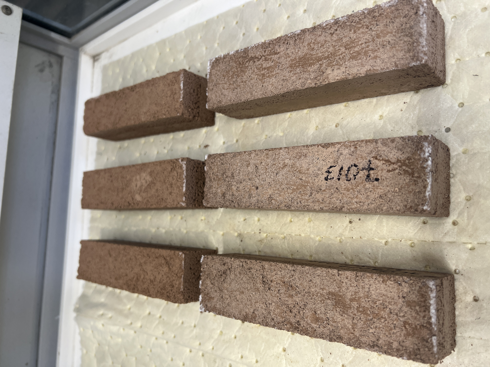
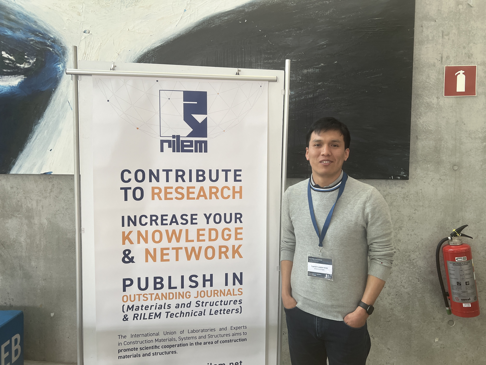

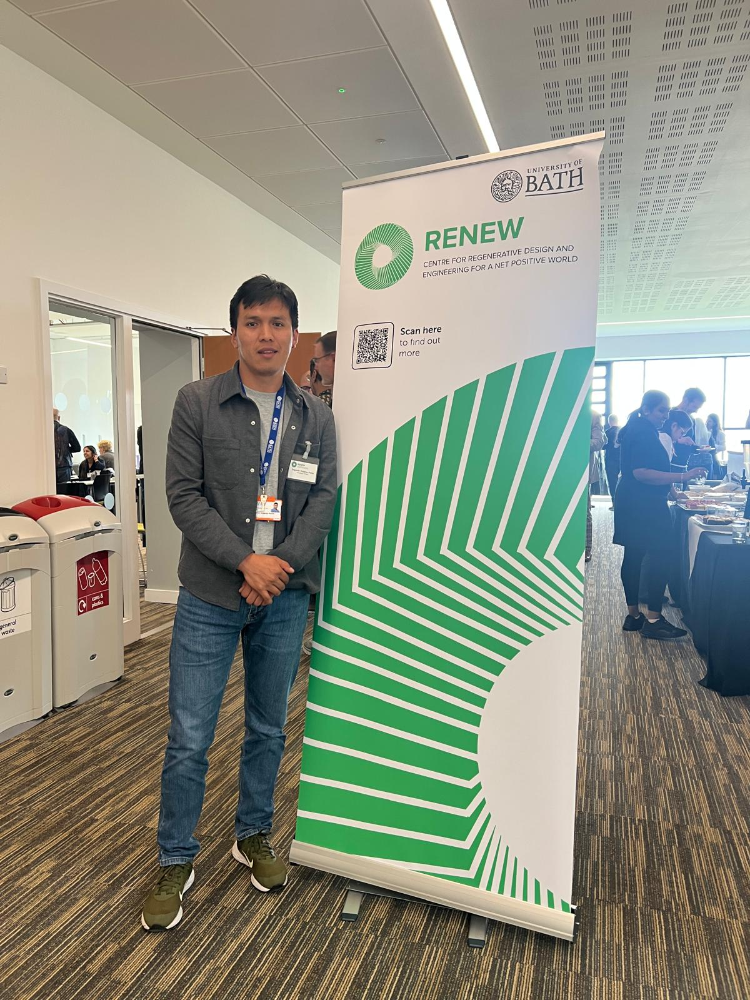
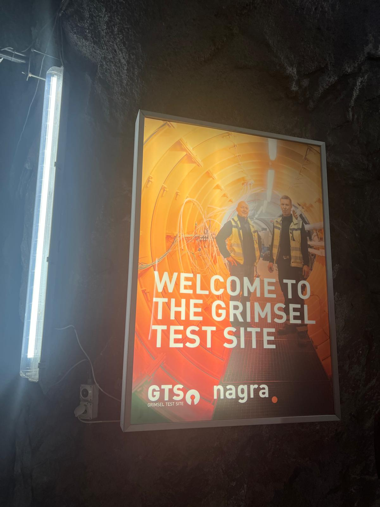
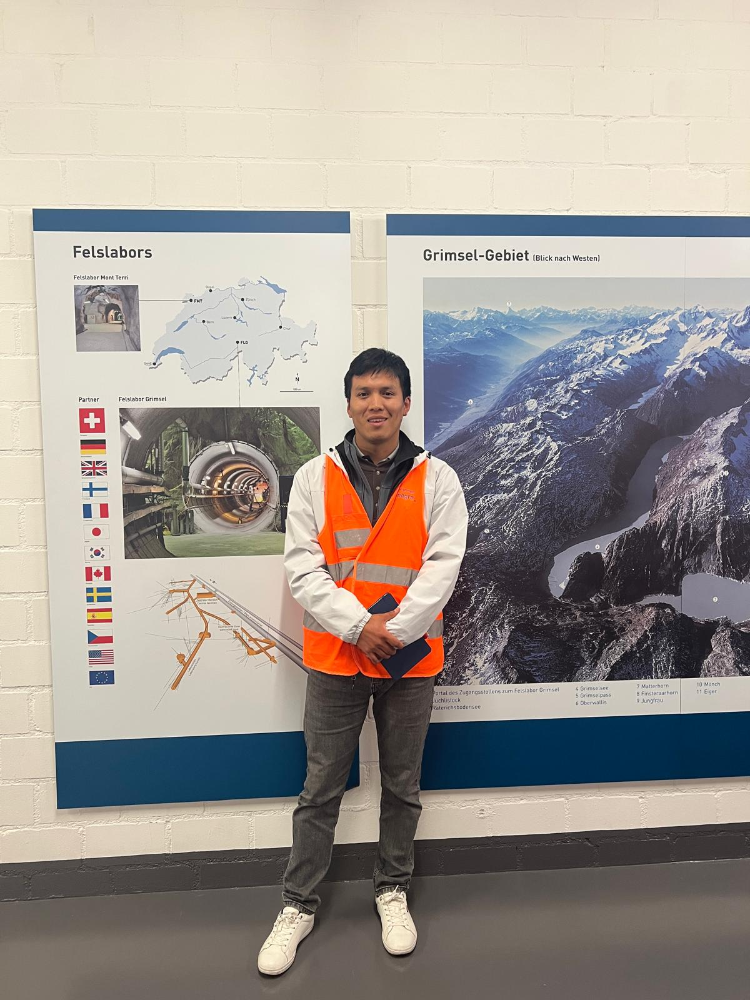
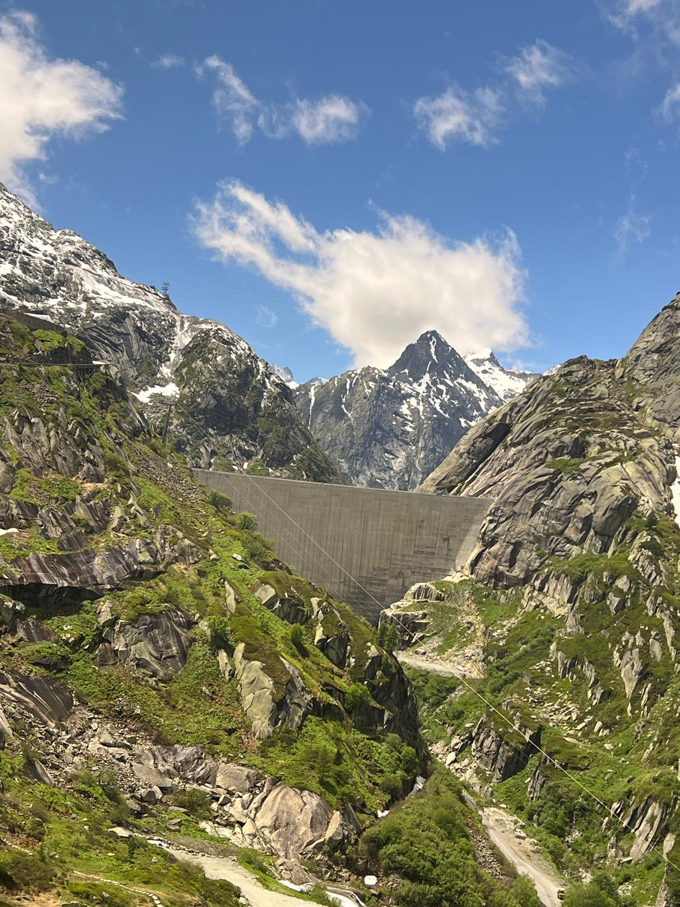
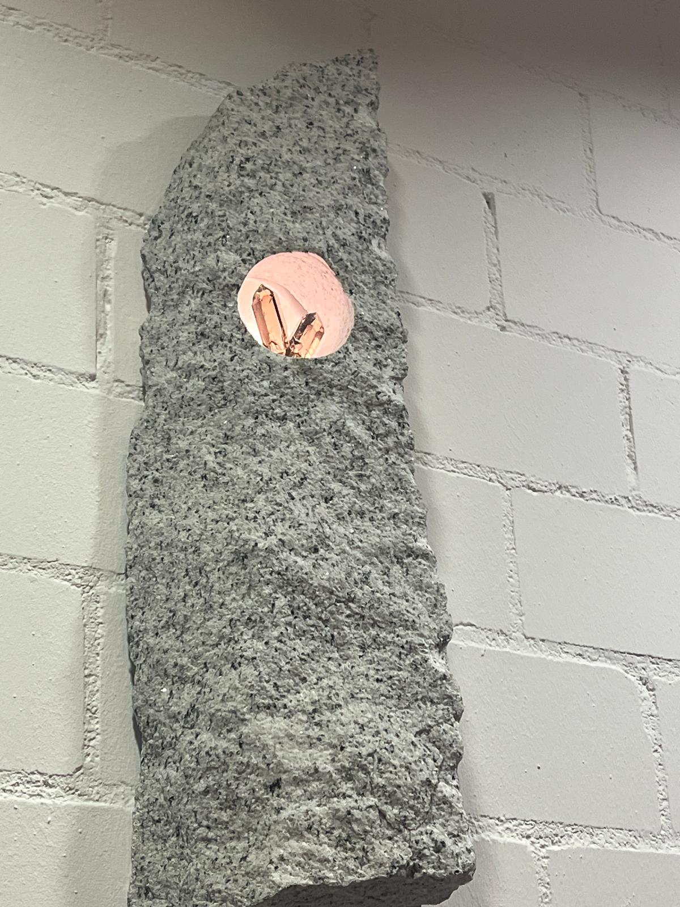
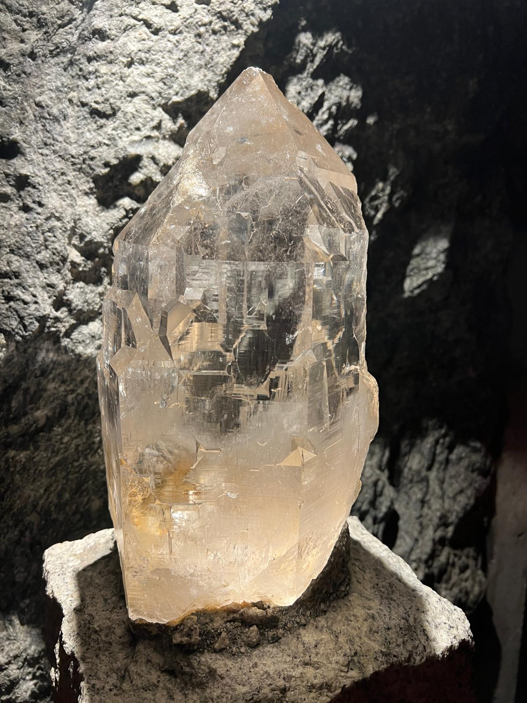
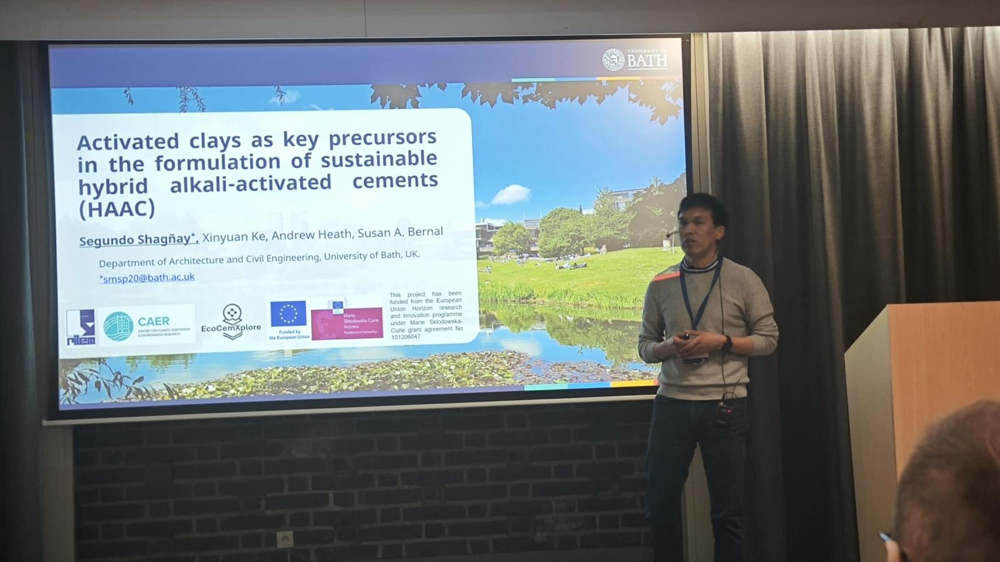
Building a low-carbon future starts with transforming the materials we rely on most. EcoCemXplore aims to develop innovative, sustainable cements that could cut emissions by up to 40% compared to traditional Portland cement. To achieve this, the project brings together materials science, civil engineering, and environmental science to design ultra-low-clinker hybrid alkaline cements that use treated low-purity clays. The project investigates ways to enhance clay reactivity and optimise fresh-state properties, as well as understanding phase evolution over time, through advanced characterisation techniques and thermodynamic modelling. Ultimately, the project will identify key strategies for promoting the use of low-cost clays in developing eco-efficient, low-carbon cements.
Project acronym
EcoCemXplore
Grant agreement ID
101206047
Funded by
European Commission
Budget
€280,000
Project duration
September 2025 – August 2027
Coordinator
University of Bath/UK
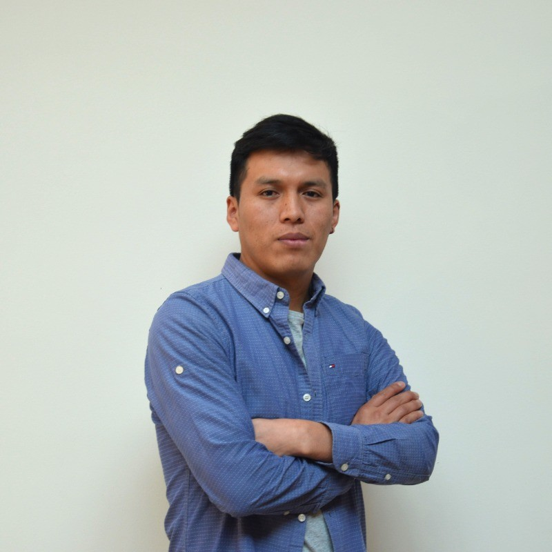
MSCA Fellow
Email: smsp20@bath.ac.uk
Tel: +44 (0) 1225385115
Materials Science and Engineering researcher specialising in sustainable cementitious materials, with a focus on eco-efficient alternatives to Portland cement, alkali-activated and hybrid binders, and the durability and corrosion behaviour of reinforced systems. Research combines advanced electrochemical techniques and micro- and nanoscale characterisation to understand degradation mechanisms and improve long-term performance of construction materials. Currently a Marie Skłodowska-Curie Postdoctoral Fellow at the University of Bath, leading the EcoCemXplore project, which investigates low-clinker hybrid cements, reaction mechanisms, phase evolution, and durability using advanced experimental approaches, including synchrotron-based techniques. Holds a PhD (Cum Laude) from the University Carlos III of Madrid, with extensive experience in eco-efficient construction materials and corrosion science. Previous research positions include the Institute of Ceramics and Glass (CSIC), TU Delft, the University Carlos III of Madrid, ICAI (Universidad Pontificia Comillas), and the Escuela Superior Politécnica de Chimborazo (ESPOCH), alongside teaching experience in Spain and Ecuador. Has contributed to multiple international research projects and collaborations across Europe and beyond, resulting in peer-reviewed publications in leading journals in construction materials and corrosion science.
MSCA Fellow Coordinator
Email: sbl30@bath.ac.uk
Tel: +44 (0) 1225385115
Susan A. Bernal FIMMM FRILEM is Professor of Sustainable Construction Materials at the University of Bath (UK). She holds BEng and DEng degrees in Materials Engineering from Universidad del Valle (Colombia). Her research interests include the development, characterisation and exploitation of advanced and non-traditional cement and concrete technologies (e.g. alkali-activated cement, low-clinker cement systems); sustainability aspects of novel cement and concrete technologies (e.g. waste valorisation, interactions of concrete and the environment, circularity in construction) and performance of cementitious materials in extreme environments (e.g. nuclear waste cementation). She currently holds editorial roles in the journals Cement and Concrete Research and Materials and Structures, and serves as Convener of the RILEM Association Cluster A: Materials Processing and Characterisation (>12 Technical Committes) and as Deputy Chair of the international Technical Committee (TC) 328-CUC on Carbon dioxide uptake by concrete during and after service life (>170 members).
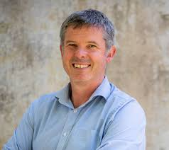
MSCA Fellow Coordinator
Email: absah@bath.ac.uk
Tel: +44 (0) 1225385115
Andrew Heath is Professor of Civil Engineering and Head of the Department of Architecture and Civil Engineering at the University of Bath (UK). He holds MSc and PhD degrees in Civil and Environmental Engineering from the University of California (USA). His research interests focus on sustainable construction materials, including earth and clay-based construction, low-carbon concretes (particularly geopolymer concrete), and self-healing concrete. His work also addresses sustainable transportation infrastructure, encompassing both innovative infrastructure materials and the development of transport systems that support the transition to net-zero mobility. In geotechnical engineering, his research includes landslide assessment, retaining wall analysis, and the modelling of earth materials for infrastructure, foundation, and slope stability applications. Professor Heath has held several academic leadership roles at the University of Bath, including Associate Dean in the Faculty of Engineering and Design and Director of the University's Centre for Learning and Teaching. He supervises doctoral research in sustainable construction materials, transportation infrastructure, geotechnical engineering, and the application of earth materials in civil engineering systems.
MSCA Fellow Coordinator
Email: xk221@bath.ac.uk
Tel: +44 (0) 1225385115
Xinyuan Ke is Lecturer in Sustainable Construction Materials at the University of Bath (UK). She holds a PhD in Materials Science and Engineering from the University of Sheffield, where her doctoral thesis received the Ceramic Prize. She joined the University of Bath in 2018 after being awarded a prestigious Prize Fellowship in recognition of her research achievements. Her research focuses on the development of low-carbon and resource-efficient construction materials to support the decarbonisation of the built environment. Her main interests include alkali-activated materials and geopolymers, CO₂ utilisation in cementitious materials, mechanochemical processing for resource valorisation, and data-driven approaches for materials design and optimisation. Dr Ke has secured and led several competitive research projects as Principal Investigator, including EPSRC-funded research on innovative technologies for net-zero concrete. She is also actively involved in international research leadership through roles with the Royal Society, the Engineering and Physical Sciences Research Council, and RILEM.
We are currently developing innovative eco-efficient blended cement systems as part of the EcoCemXplore project. Our research focuses on designing low-carbon, ultra-low-clinker hybrid alkaline cements using treated low-purity clays. We investigate material reactivity, fresh-state performance, and long-term phase evolution through experimental testing, advanced characterisation techniques, and thermodynamic modelling
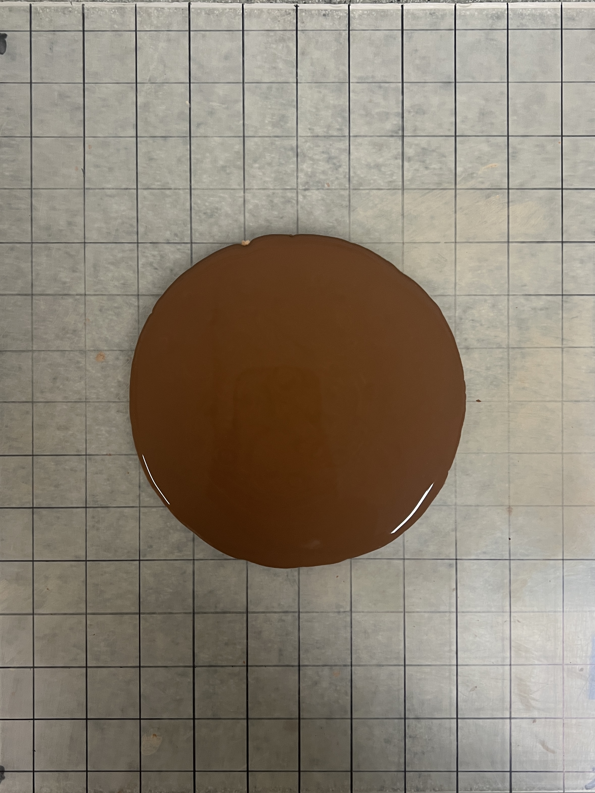
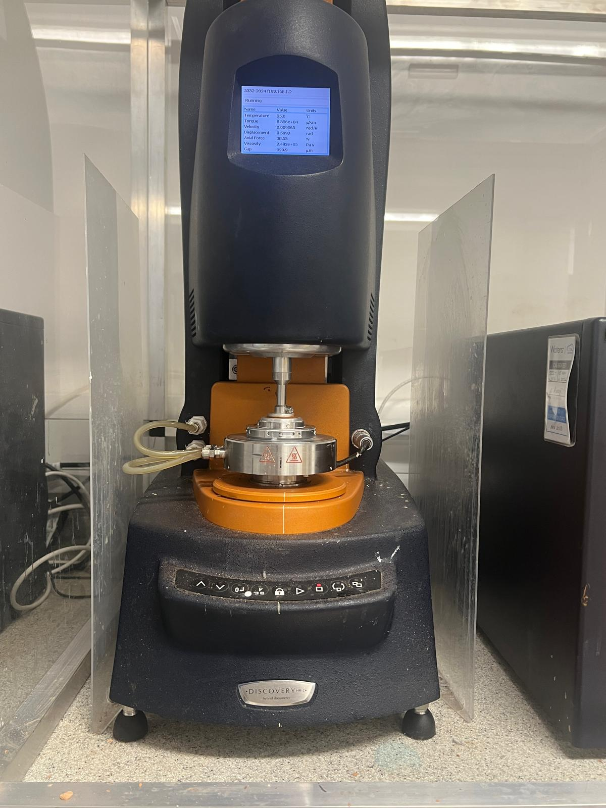
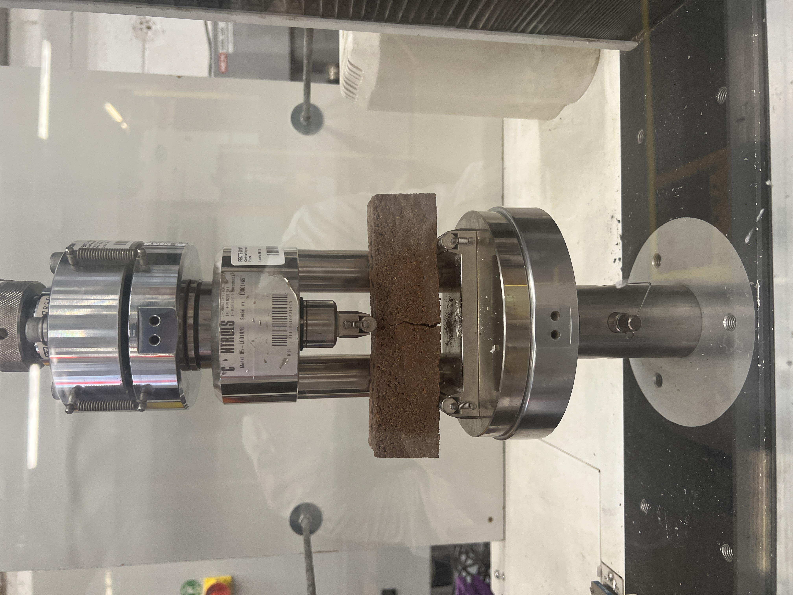

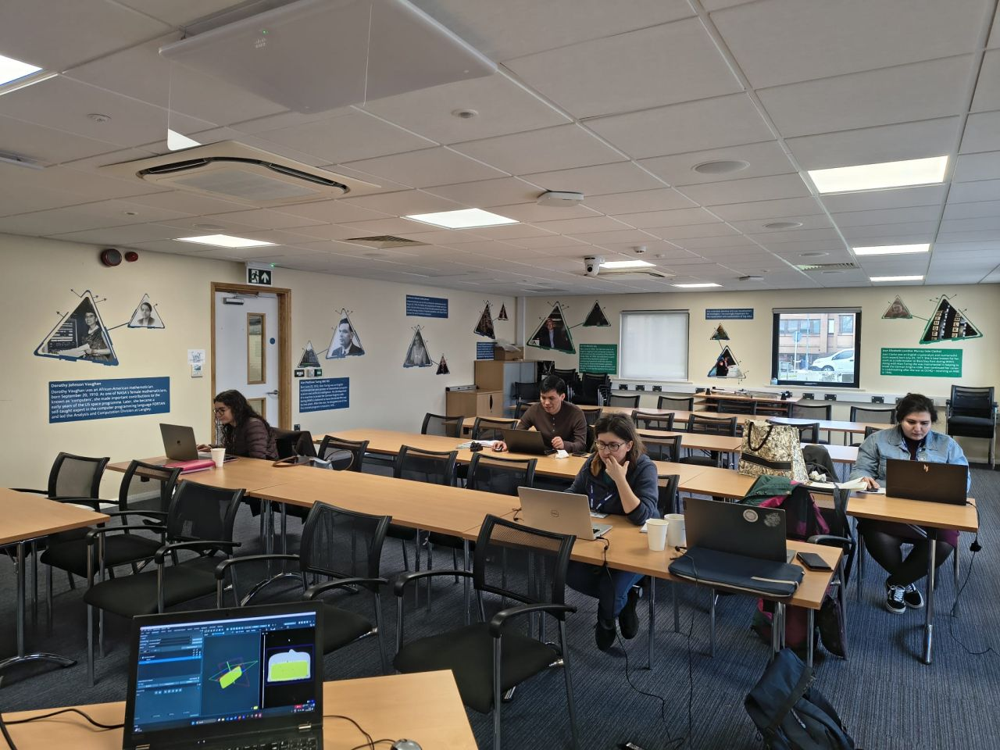

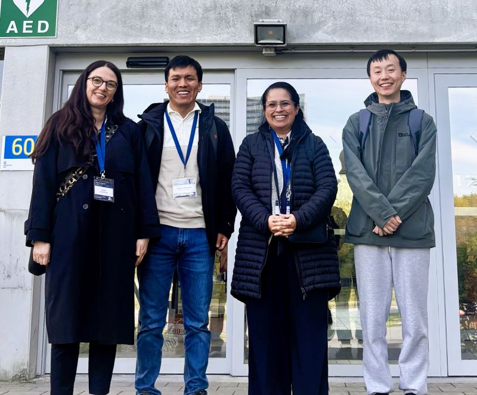
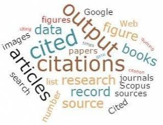
If you would like more information about EcoCemXplore, collaborations, research activities, or training opportunities, please contact us using the form below.
Your information will only be used to respond to your enquiry.